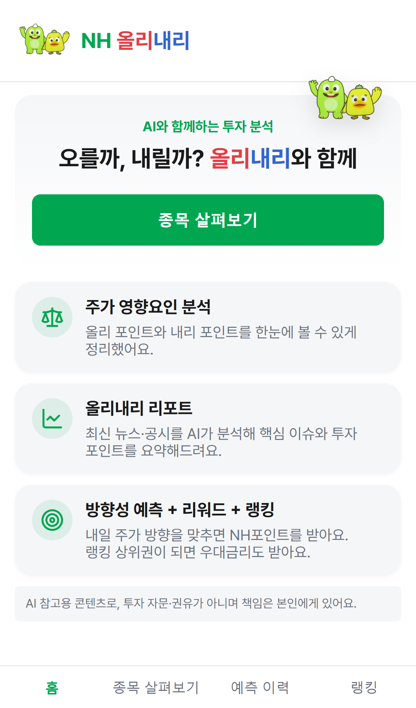
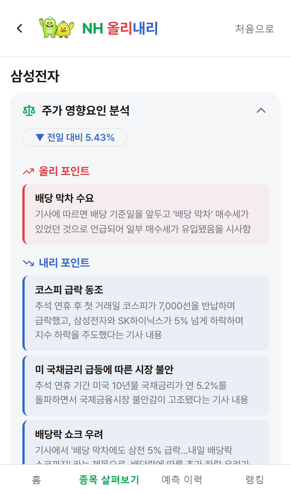
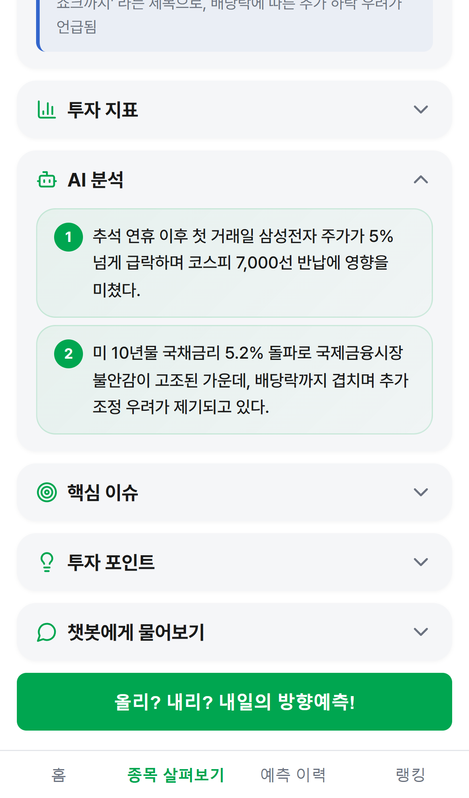
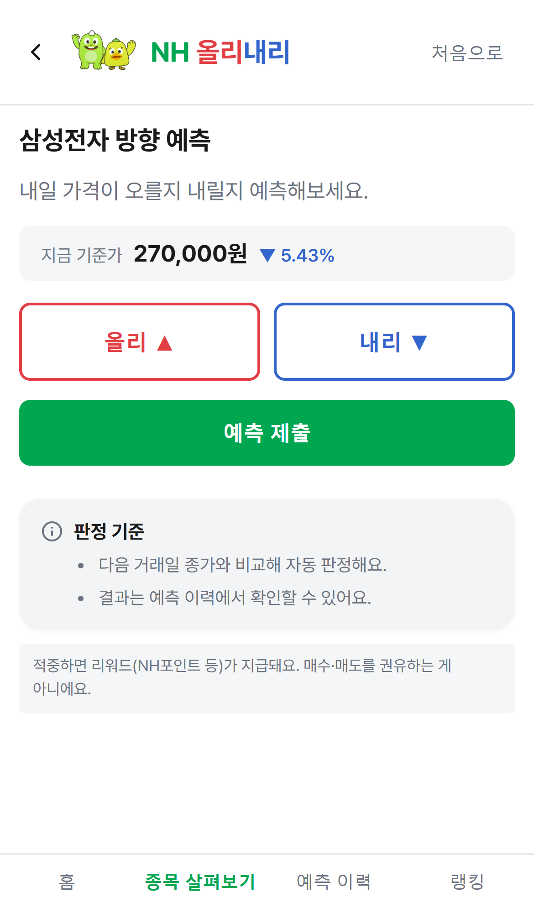
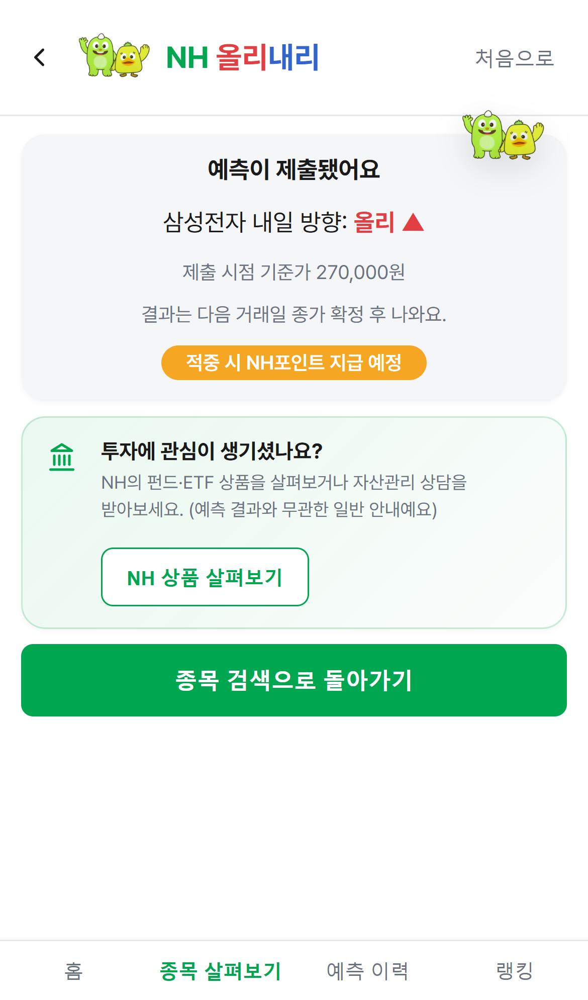
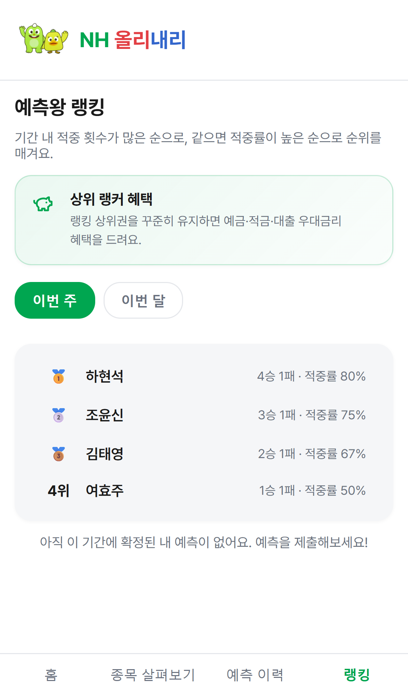

abc-stock-project.vercel.app — 핵심 화면 6단계

앱 소개와 3대 핵심 기능(영향요인 분석·리포트·예측)을 한눈에 보여줘요.

오늘 주가가 왜 움직였는지 올리·내리 포인트로 근거를 정리해요.

뉴스·공시를 AI가 요약해 핵심 이슈와 투자 포인트를 알려주고, 궁금한 점은 챗봇에게 물어봐요.

지금 기준가를 보고 내일 오를지 내릴지 예측을 제출해요.

제출 결과와 기준가가 기록되고, 다음 거래일 종가 확정 후 판정돼요.

적중 횟수 기준으로 내 순위와 상위 랭커 혜택을 확인해요.